# This is going to be an interactive lecture using Jupyter!
# So let's import things!
import numpy as np
import matplotlib.pyplot as plt
import lightkurve
import k2sc
from astropy.timeseries import LombScargle, BoxLeastSquares
import astropy.units as u
import warnings; warnings.simplefilter('ignore')
%matplotlib inlineInteractive Data Analysis with Kepler/K2 and TESS
Benjamin Pope
University of Queensland
Kepler data
The Kepler Space Telescope revolutionised exoplanetary science by providing high-precision photometry of hundreds of thousands of stars. The data is publicly available and has been used to discover thousands of exoplanets.
While the mission science team originally aimed to keep their data proprietary and analyse it in-house, after a brief period they pivoted to an open-source model with data hosted on (MAST)[https://archive.stsci.edu/kepler/], and many teams developed open-source software to analyse the data. This is what I did my DPhil on!
We’re going to interactively explore data from Kepler to see how we would discover planets, stellar variability, and correct for instrumental systematics.
# download Kepler-10 data
target = 'Kepler-10'
search = lightkurve.search_targetpixelfile(target,exptime=60) # get 1 minute cadence data
search
SearchResult containing 34 data products.
Length = 34 rows
| # | mission | year | author | exptime | target_name | distance |
|---|---|---|---|---|---|---|
| s | arcsec | |||||
| 0 | Kepler Quarter 02 | 2009 | Kepler | 60 | kplr011904151 | 0.0 |
| 1 | Kepler Quarter 03 | 2009 | Kepler | 60 | kplr011904151 | 0.0 |
| 2 | Kepler Quarter 03 | 2009 | Kepler | 60 | kplr011904151 | 0.0 |
| 3 | Kepler Quarter 03 | 2009 | Kepler | 60 | kplr011904151 | 0.0 |
| 4 | Kepler Quarter 04 | 2010 | Kepler | 60 | kplr011904151 | 0.0 |
| 5 | Kepler Quarter 05 | 2010 | Kepler | 60 | kplr011904151 | 0.0 |
| 6 | Kepler Quarter 05 | 2010 | Kepler | 60 | kplr011904151 | 0.0 |
| 7 | Kepler Quarter 05 | 2010 | Kepler | 60 | kplr011904151 | 0.0 |
| 8 | Kepler Quarter 06 | 2010 | Kepler | 60 | kplr011904151 | 0.0 |
| 9 | Kepler Quarter 06 | 2010 | Kepler | 60 | kplr011904151 | 0.0 |
| ... | ... | ... | ... | ... | ... | ... |
| 24 | Kepler Quarter 13 | 2012 | Kepler | 60 | kplr011904151 | 0.0 |
| 25 | Kepler Quarter 13 | 2012 | Kepler | 60 | kplr011904151 | 0.0 |
| 26 | Kepler Quarter 14 | 2012 | Kepler | 60 | kplr011904151 | 0.0 |
| 27 | Kepler Quarter 14 | 2012 | Kepler | 60 | kplr011904151 | 0.0 |
| 28 | Kepler Quarter 14 | 2012 | Kepler | 60 | kplr011904151 | 0.0 |
| 29 | Kepler Quarter 15 | 2012 | Kepler | 60 | kplr011904151 | 0.0 |
| 30 | Kepler Quarter 15 | 2012 | Kepler | 60 | kplr011904151 | 0.0 |
| 31 | Kepler Quarter 15 | 2013 | Kepler | 60 | kplr011904151 | 0.0 |
| 32 | Kepler Quarter 17 | 2013 | Kepler | 60 | kplr011904151 | 0.0 |
| 33 | Kepler Quarter 17 | 2013 | Kepler | 60 | kplr011904151 | 0.0 |
tpf = search[1].download()
tpf.plot()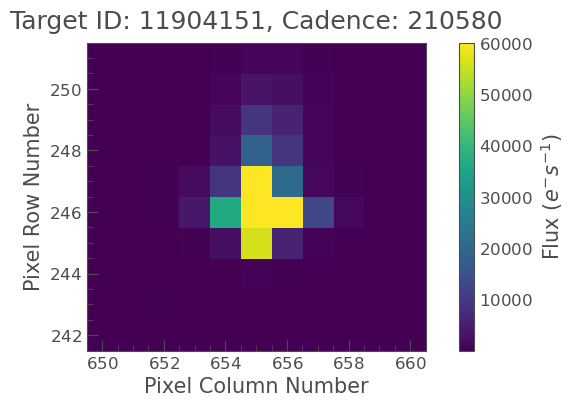
Cool! We can make this into a light curve the simplest way possible: define a pixel mask, and sum the flux in the pixels.
Let’s use the default mask from the pipeline.
tpf.plot(aperture_mask = 'pipeline')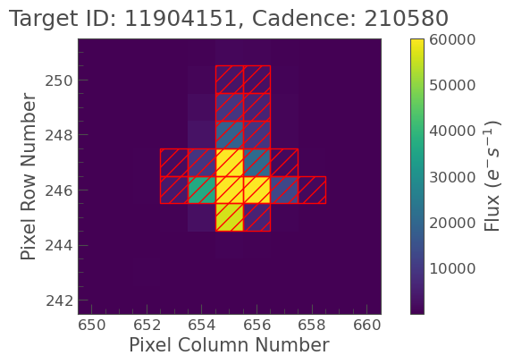
# let's sum this to make a lightcurve
lc = tpf.to_lightcurve(aperture_mask = 'pipeline').normalize().remove_nans()
lc = lc[lc.quality==0]
lc.scatter()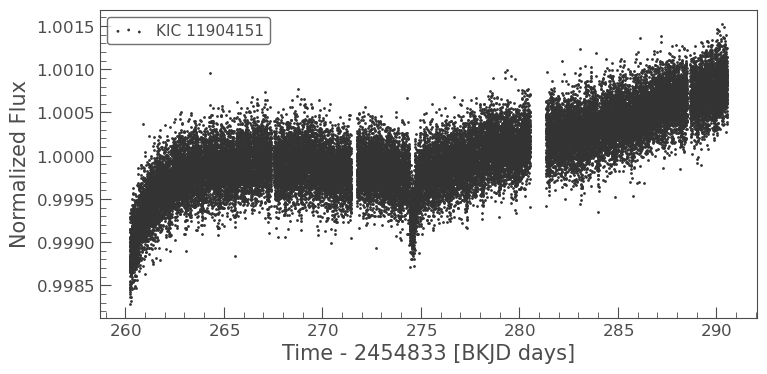
# what about that long-term trend?
flat = lc.flatten(window_length=2*24*60+1).remove_outliers(sigma_upper=3,sigma_lower=100)
flat.plot()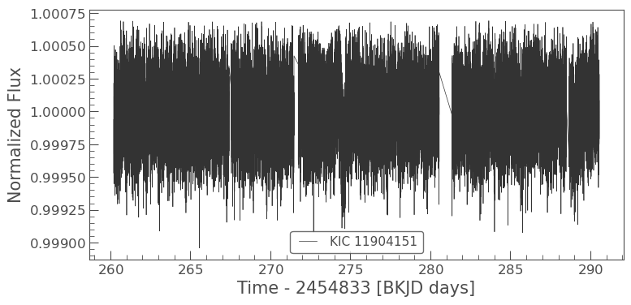
our_lc = flat.bin(0.25*u.hour).remove_nans()
our_lc.plot()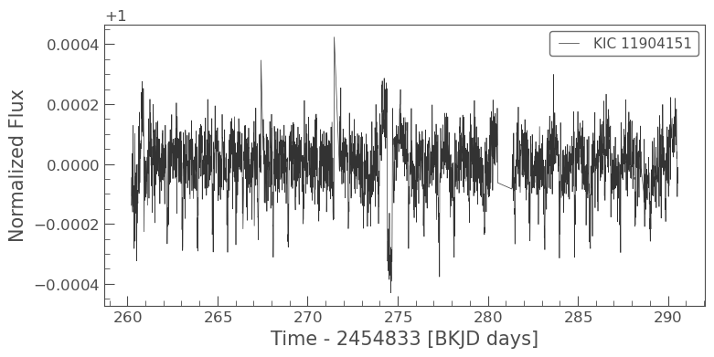
# box-least-squares fits a periodic signal of dips to the light curve
bls = BoxLeastSquares(our_lc.time, our_lc.flux, dy=our_lc.flux_err)
periods = np.linspace(0.3, 1.5, 1000)*u.day
durations = np.linspace(0.05, 0.2, 10)*u.day
periodogram = bls.power(periods, durations)
best_period = periods[np.argmax(periodogram.depth_snr.value)]
best_duration = periodogram.duration[np.argmax(periodogram.depth_snr.value)]
best_depth = periodogram.depth[np.argmax(periodogram.depth_snr.value)]
t0 = periodogram.transit_time[np.argmax(periodogram.depth_snr.value)]periodogram.keys()dict_keys(['objective', 'period', 'power', 'depth', 'depth_err', 'duration', 'transit_time', 'depth_snr', 'log_likelihood'])plt.plot(periodogram.period.value,periodogram.depth_snr.value)
plt.xlabel('Period [days]')
plt.ylabel('Signal-to-noise')
plt.xlim(periods.min().value, periods.max().value)
plt.axvline(best_period.value, color='red', linestyle='dashed')
plt.text(best_period.value+0.05, np.max(periodogram.depth_snr.value), f'Best period: {best_period.value:.4g} days')Text(0.8869369369369369, 40.83467531875844, 'Best period: 0.8369 days')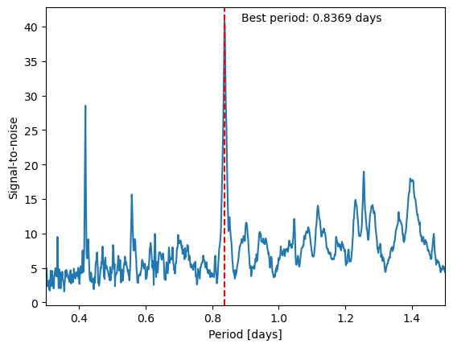
# what does that model look like?
model = bls.model(our_lc.time, best_period, best_duration, t0)
plt.plot(our_lc.time.value, our_lc.flux.value)
plt.plot(our_lc.time.value, model, color='red', lw=1)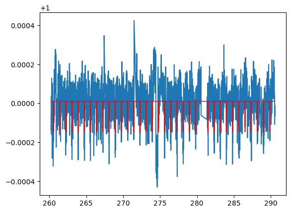
# fold it
folded_lc = our_lc.fold(period=best_period, t0=t0)
folded_times = our_lc.time.value % best_period.value
folded_args = np.argsort(folded_times)
plt.plot(folded_times[folded_args],our_lc.flux.value[folded_args]-1,'.k')
plt.plot(folded_times[folded_args],model[folded_args]-1,color='C3',lw=4)
plt.xlim(0, best_period.value)
plt.text(0.35, -best_depth*2, f'Best Depth: {best_depth*1e6:.0f} ppm',color='C3',fontdict={'size':14,'weight':'bold'})Text(0.35, -0.00031383340219341395, 'Best Depth: 157 ppm')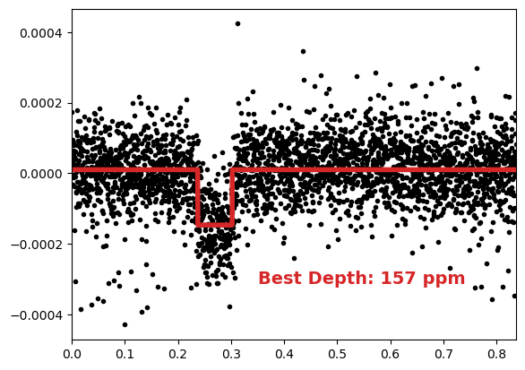
# what is Rp/Rs?
print(f'Rp/R* = {(best_depth.value)**0.5 * 100:.2f} %')
# Earth for comparison is 0.00916794
print(f'Earth/Sun Radius = {0.00916794 * 100:.2f} %')Rp/R* = 1.25 %
Earth/Sun Radius = 0.92 %Now let’s look at how it was in K2: where the systematics are terrible! Let’s look at my favourite star, EPIC 212521166.
k2target = 'EPIC 212521166'
search = lightkurve.search_lightcurvefile(k2target)
search
SearchResult containing 8 data products.
| # | mission | year | author | exptime | target_name | distance |
|---|---|---|---|---|---|---|
| s | arcsec | |||||
| 0 | K2 Campaign 06 | 2015 | K2 | 1800 | ktwo212521166 | 0.0 |
| 1 | K2 Campaign 06 | 2015 | EVEREST | 1800 | ktwo212521166 | 0.0 |
| 2 | K2 Campaign 06 | 2015 | K2SC | 1800 | ktwo212521166 | 0.0 |
| 3 | K2 Campaign 06 | 2015 | K2SFF | 1800 | ktwo212521166 | 0.0 |
| 4 | K2 Campaign 17 | 2018 | K2 | 60 | ktwo212521166 | 0.0 |
| 5 | K2 Campaign 17 | 2018 | K2 | 1800 | ktwo212521166 | 0.0 |
| 6 | K2 Campaign 17 | 2018 | EVEREST | 1800 | ktwo212521166 | 0.0 |
| 7 | K2 Campaign 17 | 2018 | K2SFF | 1800 | ktwo212521166 | 0.0 |
lc = search.download().PDCSAP_FLUX.normalize().remove_nans()
lc = lc[lc.quality==0]
lc.scatter()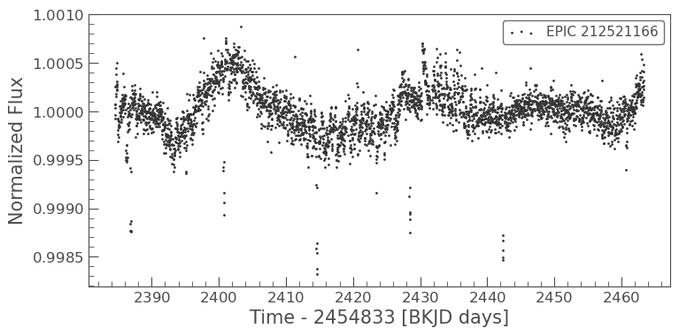
Look at all those transits! But also look how it has a long-term variation, which is probably stellar, and a short term variation from the 6-hour pointing jitter of K2. We’re going to correct for this by detrending with a Gaussian process.
x, y = lc.pos_corr1, lc.pos_corr2
fig, (ax1, ax2) = plt.subplots(1, 2, figsize=(12, 4))
ax1.plot(lc.time.value, x, 'k.', markersize=3)
ax1.plot(lc.time.value, y, 'r.', markersize=3)
ax1.set_xlabel('Time (BJD)')
ax1.set_ylabel('Position')
ax1.legend(['X', 'Y'])
ax2.plot(x, y, '.k', markersize=3)
ax2.set_xlabel('X')
ax2.set_ylabel('Y')Text(0, 0.5, 'Y')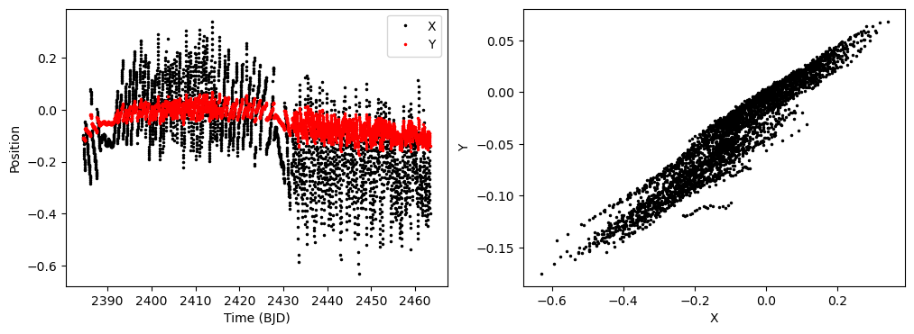
from k2sc.standalone import k2sc_lc
lc.__class__ = k2sc_lc
lc.k2sc()/Users/benpope/opt/anaconda3/envs/lk/lib/python3.10/site-packages/k2sc/standalone.py:293: LightkurveDeprecationWarning: The hdu function is deprecated and may be removed in a future version.
Use fits.open(lc.filename) instead.
primary_header = self.hdu[0].header
/Users/benpope/opt/anaconda3/envs/lk/lib/python3.10/site-packages/k2sc/standalone.py:293: ResourceWarning: unclosed file <_io.BufferedReader name='/Users/benpope/.lightkurve-cache/mastDownload/K2/ktwo212521166-c06_lc/ktwo212521166-c06_llc.fits'>
primary_header = self.hdu[0].header
/Users/benpope/opt/anaconda3/envs/lk/lib/python3.10/site-packages/k2sc/standalone.py:294: LightkurveDeprecationWarning: The hdu function is deprecated and may be removed in a future version.
Use fits.open(lc.filename) instead.
data_header = self.hdu[1].header
/Users/benpope/opt/anaconda3/envs/lk/lib/python3.10/site-packages/k2sc/standalone.py:294: ResourceWarning: unclosed file <_io.BufferedReader name='/Users/benpope/.lightkurve-cache/mastDownload/K2/ktwo212521166-c06_lc/ktwo212521166-c06_llc.fits'>
data_header = self.hdu[1].header
/Users/benpope/opt/anaconda3/envs/lk/lib/python3.10/site-packages/k2sc/dtdata.py:63: DeprecationWarning: `np.int` is a deprecated alias for the builtin `int`. To silence this warning, use `int` by itself. Doing this will not modify any behavior and is safe. When replacing `np.int`, you may wish to use e.g. `np.int64` or `np.int32` to specify the precision. If you wish to review your current use, check the release note link for additional information.
Deprecated in NumPy 1.20; for more details and guidance: https://numpy.org/devdocs/release/1.20.0-notes.html#deprecations
bstarts = np.full(nblocks, -bspan, np.int) ## Starting indices for blocks
/Users/benpope/opt/anaconda3/envs/lk/lib/python3.10/site-packages/k2sc/dtdata.py:17: DeprecationWarning: `np.bool` is a deprecated alias for the builtin `bool`. To silence this warning, use `bool` by itself. Doing this will not modify any behavior and is safe. If you specifically wanted the numpy scalar type, use `np.bool_` here.
Deprecated in NumPy 1.20; for more details and guidance: https://numpy.org/devdocs/release/1.20.0-notes.html#deprecations
self._mask = array(mask) if mask is not None else ones(self._flux.size, np.bool)
/Users/benpope/opt/anaconda3/envs/lk/lib/python3.10/site-packages/k2sc/gp.py:98: DeprecationWarning: `np.bool` is a deprecated alias for the builtin `bool`. To silence this warning, use `bool` by itself. Doing this will not modify any behavior and is safe. If you specifically wanted the numpy scalar type, use `np.bool_` here.
Deprecated in NumPy 1.20; for more details and guidance: https://numpy.org/devdocs/release/1.20.0-notes.html#deprecations
mask = zeros((t1.size,t2.size), np.bool)Using default splits [2390, 2428] for campaign 6
Starting initial outlier detection
Flagged 34 ( 1.0%) outliers.
Starting Lomb-Scargle period search
Using SqrExp position kernel
Found periodicity p = 14.79 (fap 1.7550e-190 < 1e-50), will use a quasiperiodic kernel
Starting global hyperparameter optimisation using DE 0%| | 0/150 [00:00<?, ?it/s]/Users/benpope/opt/anaconda3/envs/lk/lib/python3.10/site-packages/k2sc/de.py:85: DeprecationWarning: `np.int` is a deprecated alias for the builtin `int`. To silence this warning, use `int` by itself. Doing this will not modify any behavior and is safe. When replacing `np.int`, you may wish to use e.g. `np.int64` or `np.int32` to specify the precision. If you wish to review your current use, check the release note link for additional information.
Deprecated in NumPy 1.20; for more details and guidance: https://numpy.org/devdocs/release/1.20.0-notes.html#deprecations
t = np.zeros(3, np.int)
68%|██████▊ | 102/150 [04:57<02:19, 2.91s/it, -ln(L)=-6018.5]
/Users/benpope/opt/anaconda3/envs/lk/lib/python3.10/site-packages/k2sc/gp.py:98: DeprecationWarning: `np.bool` is a deprecated alias for the builtin `bool`. To silence this warning, use `bool` by itself. Doing this will not modify any behavior and is safe. If you specifically wanted the numpy scalar type, use `np.bool_` here.
Deprecated in NumPy 1.20; for more details and guidance: https://numpy.org/devdocs/release/1.20.0-notes.html#deprecations
mask = zeros((t1.size,t2.size), np.bool) DE finished in 297 seconds
DE minimum found at: [-5.997e+00 9.718e-01 1.254e+01 6.013e-03 -5.528e+00 6.708e+00 2.518e+01 -4.039e+00]
DE -ln(L) -6018.5
Starting local hyperparameter optimisation
Local minimum found at: [-6.000e+00 9.701e-01 1.247e+01 5.981e-03 -5.584e+00 6.384e+00
2.633e+01 -4.039e+00]/Users/benpope/opt/anaconda3/envs/lk/lib/python3.10/site-packages/k2sc/gp.py:98: DeprecationWarning: `np.bool` is a deprecated alias for the builtin `bool`. To silence this warning, use `bool` by itself. Doing this will not modify any behavior and is safe. If you specifically wanted the numpy scalar type, use `np.bool_` here.
Deprecated in NumPy 1.20; for more details and guidance: https://numpy.org/devdocs/release/1.20.0-notes.html#deprecations
mask = zeros((t1.size,t2.size), np.bool)Starting final outlier detection
8 too high
31 too low
0 not finite
Computing time and position trends
CDPP - raw - 59.783
CDPP - position component removed - 25.251
CDPP - full reduction - 25.247
Detrending time 303.0227539539337fig, (ax1, ax2) = plt.subplots(1,2, figsize=(12.0,4.0))
detrended = lc.corr_flux-lc.tr_time + np.nanmedian(lc.tr_time)
ax1.plot(lc.time.value,lc.flux.value,'.',label="Uncorrected")
ax1.plot(lc.time.value,detrended.value,'.',label="K2SC")
ax1.set_xlabel('BJD')
ax1.set_ylabel('Flux')
im = ax2.scatter(x,y,c=lc.tr_position-1,cmap='coolwarm',s=1)
ax2.set_xlabel('X')
ax2.set_ylabel('Y')
ax2.set_title('Systematics Model')
plt.colorbar(im,label='GP Correction')
# plt.xlabel('BJD')
# plt.ylabel('Flux')
# plt.title('K2-110b',y=1.01)# search the detrended light curve for transits
bls = BoxLeastSquares(lc.time, detrended, dy=lc.flux_err)
periods = np.linspace(5, 20, 1000)*u.day
durations = np.linspace(0.05, 0.2, 10)*u.day
periodogram = bls.power(periods, durations)
best_period = periods[np.argmax(periodogram.depth_snr.value)]
best_duration = periodogram.duration[np.argmax(periodogram.depth_snr.value)]
best_depth = periodogram.depth[np.argmax(periodogram.depth_snr.value)]
t0 = periodogram.transit_time[np.argmax(periodogram.depth_snr.value)]plt.plot(periodogram.period.value,periodogram.depth_snr.value)
plt.xlabel('Period [days]')
plt.ylabel('Signal-to-noise')
plt.xlim(periods.min().value, periods.max().value)
plt.axvline(best_period.value, color='red', linestyle='dashed')
plt.text(best_period.value+0.1, np.max(periodogram.depth_snr.value), f'Best period: {best_period.value:.4g} d')Text(13.958858858858859, 125.15465250327411, 'Best period: 13.86 d')# what does the model look like?
model = bls.model(lc.time, best_period, best_duration, t0)
plt.plot(lc.time.value, detrended.value)
plt.plot(lc.time.value, model, color='red', lw=1)# folded
folded_lc = lc.fold(period=best_period, t0=t0)
folded_times = lc.time.value % best_period.value
folded_args = np.argsort(folded_times)
plt.plot(folded_times[folded_args],detrended.value[folded_args]-1,'.k')
plt.plot(folded_times[folded_args],model[folded_args]-1,color='C3',lw=2)
plt.xlim(2,4)/Users/benpope/opt/anaconda3/envs/lk/lib/python3.10/site-packages/astropy/utils/decorators.py:546: LightkurveDeprecationWarning: "t0" was deprecated in version 2.0 and will be removed in a future version. Use argument "epoch_time" instead.
return function(*args, **kwargs)(2.0, 4.0)How did we do this in the paper?
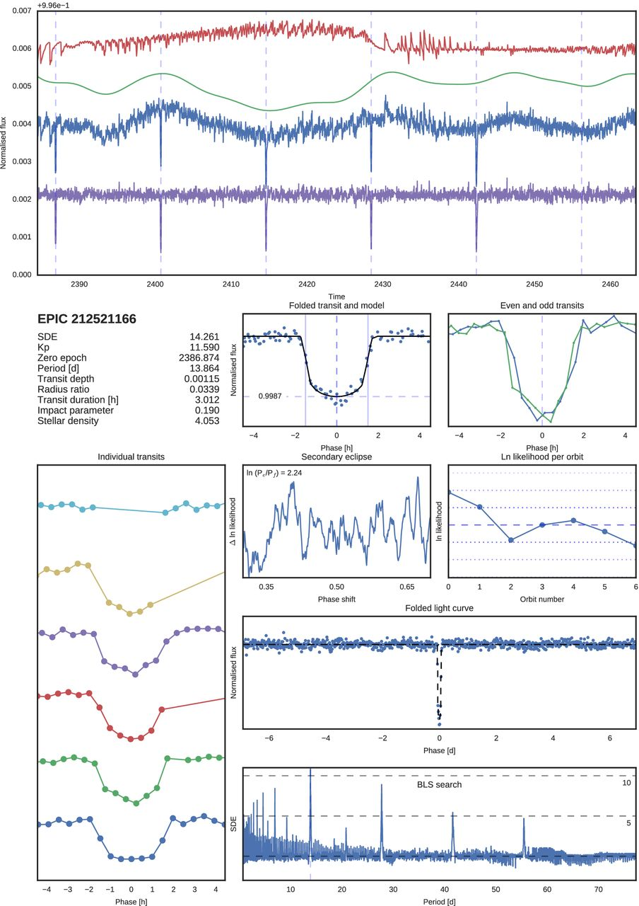

Now let’s look at one last dataset - some asteroseismology data from TESS. Let’s look at the Northern Star - Polaris. “As constant as the Northern Star” - but is it really?
starname = 'Polaris'
search = lightkurve.search_lightcurvefile(starname,mission='TESS',exptime=120)
search/var/folders/vx/lm_q_1ld7c13_fbqfscs9n4w0000gq/T/ipykernel_99792/1715134361.py:3: LightkurveDeprecationWarning: The search_lightcurvefile function is deprecated and may be removed in a future version.
Use search_lightcurve() instead.
search = lightkurve.search_lightcurvefile(starname,mission='TESS',exptime=120)lc = search[0].download().PDCSAP_FLUX.normalize().remove_nans()/Users/benpope/opt/anaconda3/envs/lk/lib/python3.10/site-packages/lightkurve/io/tess.py:33: ResourceWarning: unclosed file <_io.BufferedReader name='/Users/benpope/.lightkurve-cache/mastDownload/TESS/tess2019331140908-s0019-0000000303256075-0164-s/tess2019331140908-s0019-0000000303256075-0164-s_lc.fits'>
lc = read_generic_lightcurve(filename, flux_column=flux_column, time_format="btjd")
/var/folders/vx/lm_q_1ld7c13_fbqfscs9n4w0000gq/T/ipykernel_99792/54457171.py:1: LightkurveDeprecationWarning: The PDCSAP_FLUX function is deprecated and may be removed in a future version.
lc = search[0].download().PDCSAP_FLUX.normalize().remove_nans()
/Users/benpope/opt/anaconda3/envs/lk/lib/python3.10/site-packages/lightkurve/lightcurve.py:1138: LightkurveWarning: The light curve has a negative median flux (-2.23e+07 electron / s); `normalize()` will therefore divide by a negative number and invert the light curve, which is probablynot what you want
warnings.warn(lc.plot()<AxesSubplot:xlabel='Time - 2457000 [BTJD days]', ylabel='Normalized Flux'>This is a typical light curve for a Cepheid variable! If we want to determine its period, we can use the Lomb-Scargle periodogram.
This is defined as:
\[P(f) = \frac{1}{2\sigma^2} \left( \left( \sum_i y_i \cos(2\pi f t_i) \right)^2 + \left( \sum_i y_i \sin(2\pi f t_i) \right)^2 \right)\]
where \(y_i\) are the data points, \(t_i\) are the times, and \(\sigma\) is the standard deviation of the data.
This is an estimator for the mod-squared Fourier transform suitable for unevenly sampled data. In practice, this is implemented as a linear regression problem with a design matrix that includes sine and cosine terms at a single frequency for all times, and a mean term (and indeed polynomial trends or instrumental systematics models).
Design matrix \(X\):
\[X = \begin{bmatrix} 1 & \cos(2\pi f t_1) & \sin(2\pi f t_1) \\ 1 & \cos(2\pi f t_2) & \sin(2\pi f t_2) \\ \vdots & \vdots & \vdots \\ 1 & \cos(2\pi f t_N) & \sin(2\pi f t_N) \end{bmatrix}\]
We then solve this with least squares.
# lomb-scargle
ls = LombScargle(lc.time, lc.flux, dy=lc.flux_err)
periods = np.linspace(1, 10, 1000)*u.day
frequency = 1/periods
power = ls.power(1/periods)plt.plot(periods, power)
plt.xlabel('Period [days]')
plt.ylabel('Power')
plt.xlim(periods.min().value, periods.max().value)
plt.axvline(periods[np.argmax(power)].value, color='red', linestyle='dashed')
plt.text(periods[np.argmax(power)].value+0.1, np.max(power), f'Best period: {periods[np.argmax(power)].value:.4g} d')Text(4.063963963963964, 0.9593880168051868, 'Best period: 3.964 d')